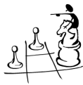
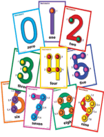

Math for Special Learners
OBJECTIVE: During this module, you will learn about services that are provided to children ages 0-5.
In this module, you will look at math learning disabilities and techniques to assist students in dealing with their math fears and phobias. We will direct you to several websites as references and we encourage you to print out references and add them to your Special Ed NOTEBOOK. The more information that you have for the first days of school, the more successful you will be as a teacher and the more successful your students will be in your classroom. Use the internet and the VAST array of information that it can provide to teachers!
Take a few minutes to learn about 2 instructors that will be sharing ideas with you about how to make math fun and exciting!
Before you dig into the exciting world of math, take a few minutes and read through Competency 009 (p.18) describing how the Special Education teacher promotes student performance in math! You will be tested over mathematical concepts on the TExES exam!
"LD Online" is a great internet reference when it comes to dealing with students with disabilities. Take a few minutes and get acquainted with their website! While you are there, read the article titled, "Math Learning Disabilities", by Kate Garnett: http://www.ldonline.org/article/5896
Watch this video clip as the class discusses and summarizes the article. Follow along and fill in your Math Disabilities and Strategies worksheet as the video describes the various types of math disabilities and strategies to assist students.
Dyscalculia: The Math Disability
Tips from Jennifer - An Adult Survivor of Math Disabilities
I always knew that I was bad at math. I was an average to strong student in every other subject, and I even excelled when it came to memorizing things, but math was so bad for me that, to this day I don't even like to think about it.
What I didn't know was that math disabilities, just like reading disabilities, are real and that the term for learning disabilities characterized by difficulties with mathematical skills is DYSCALCULIA. There are lots of forms of math disabilities, but they affect many children and adults, and can, in many cases be helped. For me, understanding math came when it was put into other contexts, for example, it was only after I took physics that I understood solving simple algebraic expressions. Putting math into other contexts is just one of many strategies that can be used with students who suffer from dyscalculia, but I will get to more after I've explained some of the symptoms and warning signs. I want to note that I was never formally diagnosed with dyscalculia, but as I read over the warning signs I am inclined to think I should have been.
Dyscalculia, like many disabilities, can manifest itself differently at different age levels.
When children with this disability are young they might have difficulty learning:
- the meaning of numbers,
- trouble with tasks like sorting objects by shape, size or color;
- recognizing groups and patterns;
- and comparing and contrasting using concepts like smaller/bigger or taller/shorter and
- even struggle when learning to count
School-age children with dyscalculia may have difficulty:
- solving basic math problems using addition, subtraction, multiplication and division.
- They struggle to remember and retain basic math facts (i.e. times tables), and
- have trouble figuring out how to apply their knowledge and skills to solve math problems.
- Children with math-related disabilities might also understand the needed math facts, but have difficulty putting them down on paper in an organized way.
Many teenagers and adults with dyscalculia may have difficulty:
- moving on to more advanced math applications.
- They may struggle to follow multi-step procedures,
- visualize patterns, or
- Identify critical information needed to solve equations and more complex problems.
The warning signs for dyscalculia are varied, and it is important to remember that when a child is struggling with math, it does not necessarily mean that they have a disability - it is important to remember that all children learn all things at different paces and in different ways. Still, identifying dyscalculia is an important first step in helping a child overcome this disability. If a child displays the following signs, getting additional help might be beneficial:
- Good at speaking, reading, and writing, but slow to develop counting and math problem-solving skills
- Good memory for printed words, but difficulty reading numbers, or recalling numbers in sequence
- Good with general math concepts, but frustrated when specific computation and organization skills need to be used
- Trouble with the concept of time-chronically late, difficulty remembering schedules, trouble with approximating how long something will take
- Poor sense of direction, easily disoriented and easily confused by changes in routine
- Poor long term memory of concepts-can do math functions one day, but is unable to repeat them the next day
- Poor mental math ability-trouble estimating grocery costs or counting days until vacation
- Difficulty playing strategy games like chess, bridge or role-playing video games
- Difficulty keeping score when playing board and card games.
Luckily there are some strategies that parents, teachers and tutors can use to help students with dyscalculia:
- Use graph paper for students who have difficulty organizing ideas on paper.
- Work on finding different ways to approach math facts; i.e., instead of just memorizing the multiplication tables, explain that 8 x 2 = 16, so if 16 is doubled, 8 x 4 must = 32.
- Practice estimating as a way to begin solving math problems.
- Introduce new skills beginning with concrete examples and later moving to more abstract applications.
- For language difficulties, explain ideas and problems clearly and encourage students to ask questions as they work. Provide a place to work with few distractions and have pencils, erasers and other tools on hand as needed.
The most important thing you can do for a student with dyscalculia is help them identify their strengths and weaknesses, this will build confidence and give students a sense of purpose and focus.
Want to see what it is like to have a math disability?
Experience it yourself!
Go to this website, Misunderstood Minds
Read through the following activities:
Basics of Mathematics - and do Try it yourself (REALLY!!)
Math and Memory - and do (2) Try it yourselves (REALLY!!)

Once you are in the classroom during your internship phase, you will complete an assignment called the SRP (Student Resource Profile). This assignment will require you to take an "inventory" of your students, materials in your classroom, and resources available on your campus. It is hard to facilitate instruction unless you know about all the tools and materials that are at your disposal. Watch this video clip to see some of the most common manipulatives that should be present in your classroom if you are teaching math.
What if I don't have access to any materials? How am I going to be able to teach hands on math? GET CREATIVE!
Don't forget that kids learn with catchy songs ans mnemonics! Can remember how to multiply and divide fractions? See if this video helps!
What strategies and techniques help kids with math disabilities?
Touch Math
Every student learns more effectively when taught according to his or her learning preference. Some are primarily visual, some are auditory, and others are tactile-kinesthetic.
Touch Math has uniquely addressed individual learning styles since this multi-sensory approach first became part of math. Touch Math contains dots and circles.
Touch Math:
- Involves visual, auditory, and tactile experiences.
- Reinforces number values.
- Eliminates guessing and reduces errors dramatically.
Tips for Teaching the Touch Points
The numeral one is touched at the top while counting, "one."
The numeral two s touched at the beginning and the end of the numeral while counting, "one, two."
The numeral three is touched at the beginning, middle and end of the numeral while counting, "one, two, three."
The numeral four is touched and counted from top to bottom on the down strokes while counting, "one, two, three, four."
The numeral five is touched and counted in the order, "one, two, three, four, five." The fourth touch point may be referred to as the "belly button" to help students remember it.
The numeral six starts the use of dots with circles. Six is touched and counted from top to bottom, "one-two, three-four, five-six."
The numeral seven is touched and counted from top to bottom, "one-two, three-four, five-six," then come back up and count "seven." The single touch point on the seven is referred to as the nose. Tell students, "Come back up and punch the seven in the nose."
The numeral eight is touched and counted from left to right, "one-two, three-four, five-six, seven-eight." Tell students that the eight looks like a robot. They will count his head first, then his body.
The numeral nine The numeral nine is touched and counted from top to bottom, "one-two, three-four, five-six," followed by the single dots, "seven, eight, nine." Tell students that the nine has a face- eyes and nose.
To learn more, go to the Touch Math web site
Watch this video clip as the instructor explains other strategies and techniques to help students be successful.
Complete your Math Strategies Summary Page and add it to your NOTEBOOK!